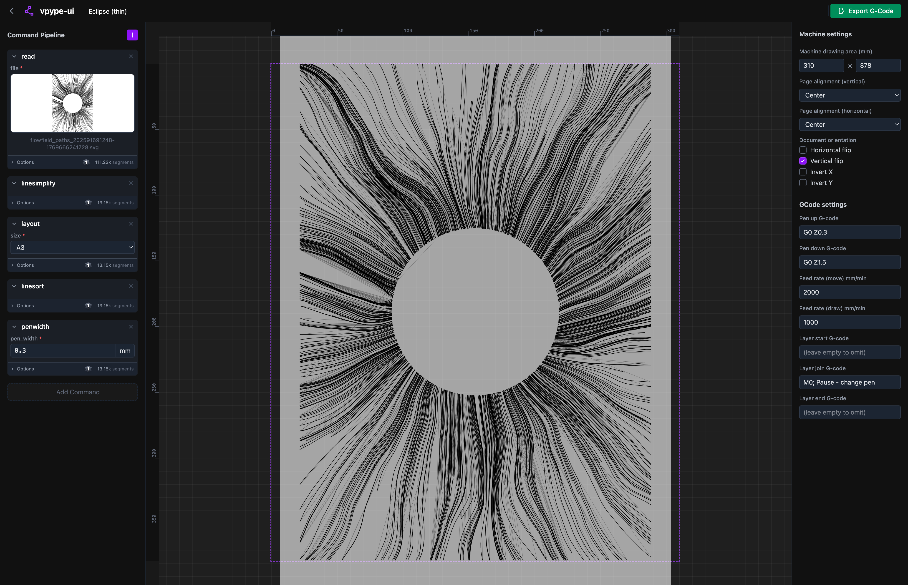

I built a pen plotter and quickly found that Inkscape wasn't the right tool. While looking for alternatives, I discovered vpype — a CLI for composing pen plotter vector graphics through chained commands. I loved the idea! It's expressive, composable, and feels like the right abstraction.
But the UX had a shortcoming that bothered me: the preview. vpype has one, but it's slow — every change re-runs the entire pipeline from scratch. When you're iterating on the look of something visual, that feedback loop can be tiring.
I also kept running into a recurrent physical problem: generating gcode that exceeded my machine's limits. The resulting sounds are not good. I needed something that understood the machine's coordinate space and simply refused to output anything dangerous.
So I built vpype-ui: a browser interface for vpype that keeps the pipeline model but adds a live preview at each step. The backend caches the document state after every command — when you edit one step, only that step and everything after it re-executes. Earlier results are reused. The UI also lets you lay out your paper relative to the machine, and will refuse to produce gcode that would go out of bounds.
The project isn't released yet. I want to polish it and find a distribution approach that doesn't require me to host it — I wouldn't want someone to depend on a tool that could disappear if the server goes dark. Oh, and it's much cheaper!